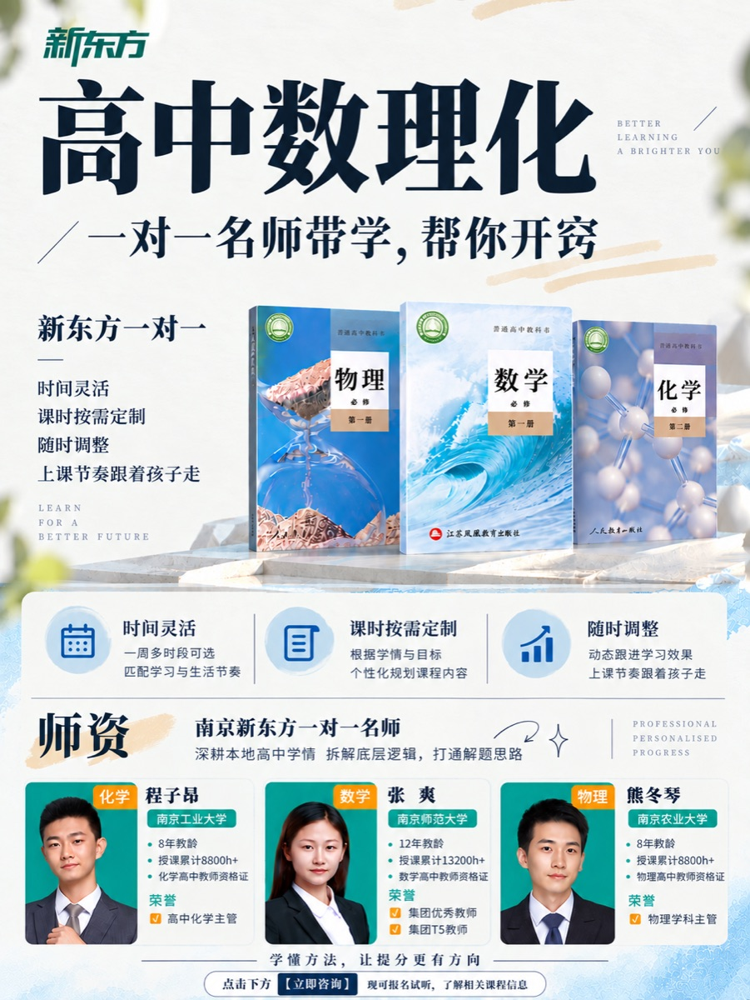
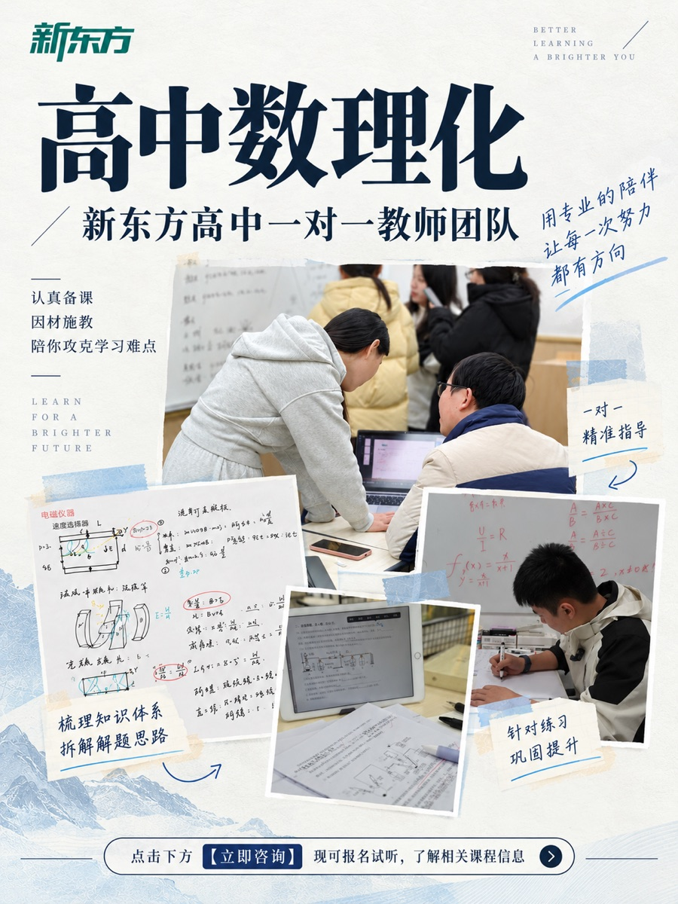
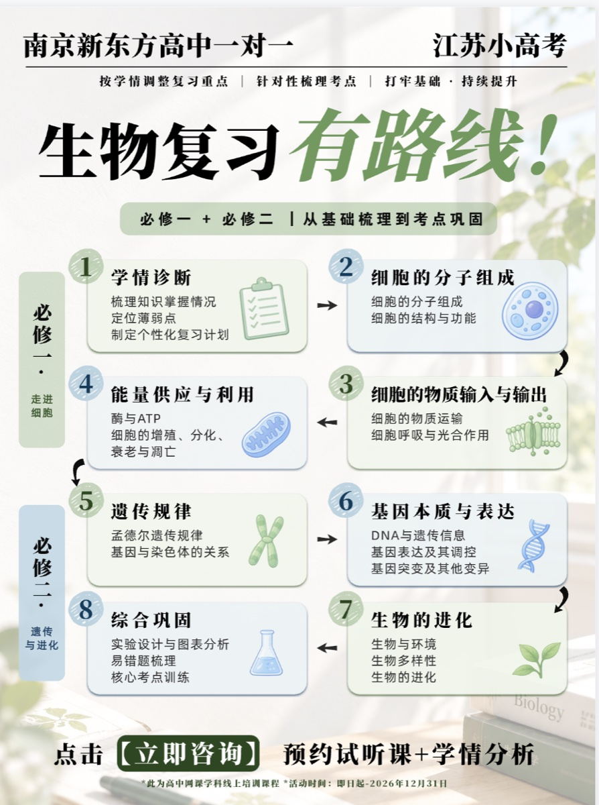
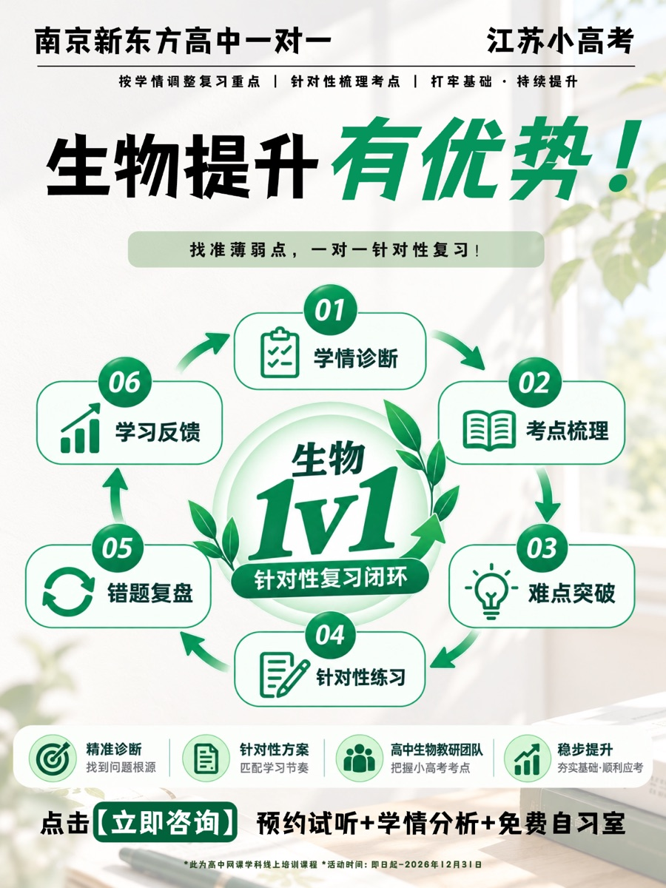
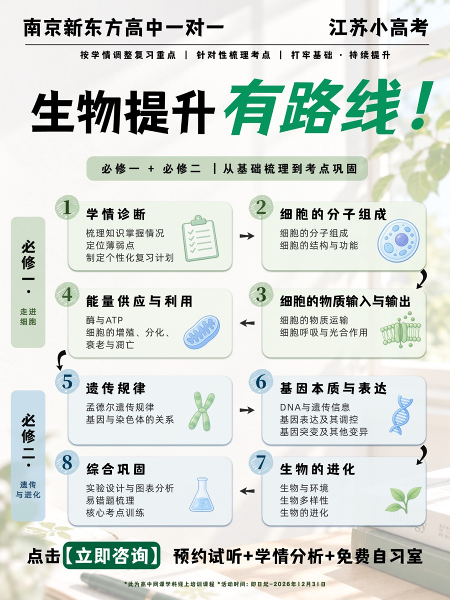

南京账号对比分析
对照上海、兰州、苏州、武汉、天津等区域账号，定位重复营销、服务过程不足和内容衔接不自然的问题。
- 先说明问题，再介绍课程
- 一篇笔记只完成一个主要任务
- 用真实教学过程建立信任
入职后的第一项工作不是制作笔记，而是分析账号。
两次分析都获得了认可，也成为我进入后续内容工作的起点。后来，分析、选题、文案、视觉与反馈逐渐连成一个持续修改的过程。
账号不缺产品，也不缺发布数量。更需要补上的，是用户从“看到课程”到“理解自己为什么需要它”之间的证据。
对照上海、兰州、苏州、武汉、天津等区域账号，定位重复营销、服务过程不足和内容衔接不自然的问题。
继续区分学生、家长、产品与教师内容各自承担的任务，并观察栏目能否形成连续阅读。
栏目是一种系统化、专业化的呈现，也是对用户下一次阅读的承诺。
从人群和问题出发，决定关键词、封面和内页；发布后再回看内容表现，进入下一次修改。
01确认目标人群、使用场景和最需要解决的问题。
封面先让用户看懂课程和师资，第二页再用真实学习场景、板书和练习素材说明一对一怎样进入学习过程。


这一组先让用户理解“弱科为什么难提升”，再把方法拆成课前诊断、课中训练和课后巩固。
问题先被看懂，课程才知道应该出现在哪里。
第一轮完成度尚可，但带教反馈是“不够营销、表达偏软”。封面缺少问题钩子，也没有突出产品和课程。需求重新明确后，我重设每一页的任务，制作了三页连续内容。



当页面反复修改仍然不对，先回到每一页的任务，比继续调整版式更有效。
据带教反馈，高中数理化及数篇非营销笔记上线后，南京账号在引导用户咨询和留下联系方式方面有所改善。
我还在学习，怎样把分析里的判断变成真正能发布的内容。
很多时候，修改不是把页面做得更漂亮，而是想清楚：这篇内容究竟写给谁，最先要让对方看到什么、看懂什么。